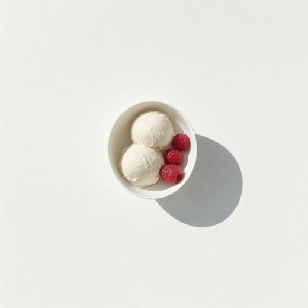
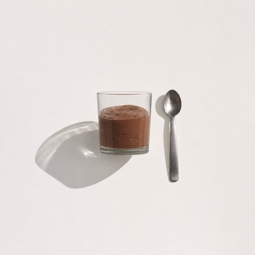
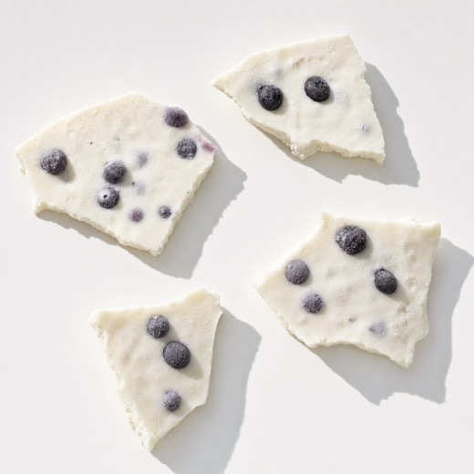

01
Cottage cheese
ice cream
Two ingredients, tastes like cheesecake, 20 grams of protein.
Confirmed / check your inbox
It lands in the next couple of minutes. If it is not there, look in Promotions or Spam and drag it across, so the rest of the 30 days arrives where you can find it.
One more thing
The loop keeps your meals boring on purpose. That is the whole point. But nobody stays with boring for 30 days straight, so once or twice a week we text you one small thing worth making.

01
Two ingredients, tastes like cheesecake, 20 grams of protein.

02
Stir, chill, eat. The one that gets people through the evening.

03
Make a tray on Sunday, break off a piece when you want one.
Once or twice a week, for the 30 days. That is the whole commitment.
Reply STOP any time and they end immediately. Message and data rates may apply.